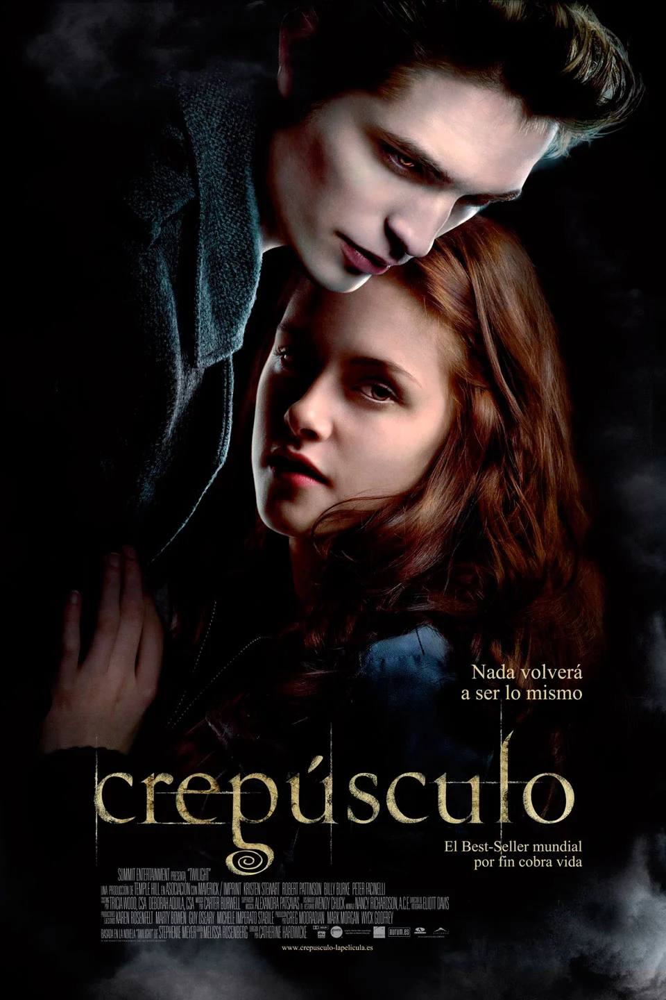

Crepusculo
cuenta la historia de Bella Swan y el vampiro del que se enamora, Edward Cullen. Bella se muda a la pequeña y lluviosa ciudad de Forks, Washington, para vivir con su padre después de que su madre se vuelva a casar. Odia la lluvia, pero al menos encaja mejor en Forks que en su enorme escuela secundaria en Phoenix, Arizona.
En su primer día de clases, ve a Edward Cullen, uno de un grupo de cinco estudiantes, todos los cuales parecen inhumanamente hermosos y distantes hacia el resto de la escuela. Bella está hipnotizada por la buena apariencia de Edward, pero por alguna razón, su primera respuesta hacia ella es increíblemente negativa, e incluso lo escucha tratando de dejar la clase de biología que tienen juntos. Poco a poco comienza a volverse menos hostil, aunque le advierte que sería mejor que ella se mantuviera alejada.
Necesitas ayuda?
llama al 008 25 09 123
Creado por
Magdalena Almazán Hernández
Gabriela Bruno Simón
Ana Flores Carreón
Sarahi Valentín Gutierrez
Conalep 173 de la carrera de P.T.B en informática